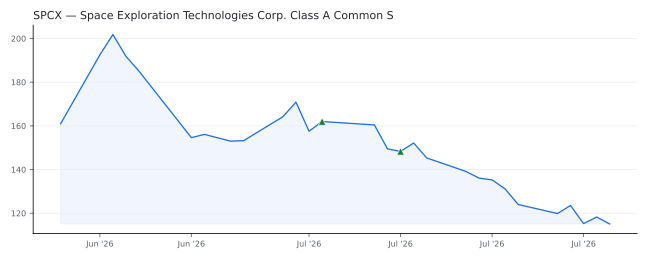

bullish · bearish · n/a — dots: price>SMA10 · SMA10>SMA50 · SMA50>SMA200 · up>down volume (20d)
Other · mega cap
Members who bought SPCX earned a dollar-weighted -23.1% from their disclosure dates, versus -0.4% for the S&P 500 over the same holding windows (-22.7% alpha).

▲ green = a disclosed purchase · ▼ red = a disclosed sale (plotted on disclosure date)
Founded in 2002 and commonly known as SpaceX, the Space Exploration Technologies Corporation designs, manufactures, and operates a family of reusable rockets to launch various payloads into Earth orbit for government and commercial customers. Starting in 2019, the company began launching a constellation of its own communication satellites to provide mobile broadband and wireless services under the Starlink brand. In early 2026, the company acquired xAI from its founder, Elon Musk, which operates a large language artificial intelligence model named Grok, a gigawatt-scale data center called Colo · website
| Member | Chamber | Out-performer | Disclosed buys $ | Return on buys |
|---|---|---|---|---|
| Daniel Meuser | house | — | $32K | -28.1% |
| Gilbert Cisneros | house | — | $8K | -28.1% |
| John McGuire | house | — | $8K | -21.5% |
| Jared Moskowitz | house | — | $8K | +1.2% |
Disclosed $ figures are bracket midpoints — filings report ranges (e.g. $1,001–$15,000), not exact amounts.